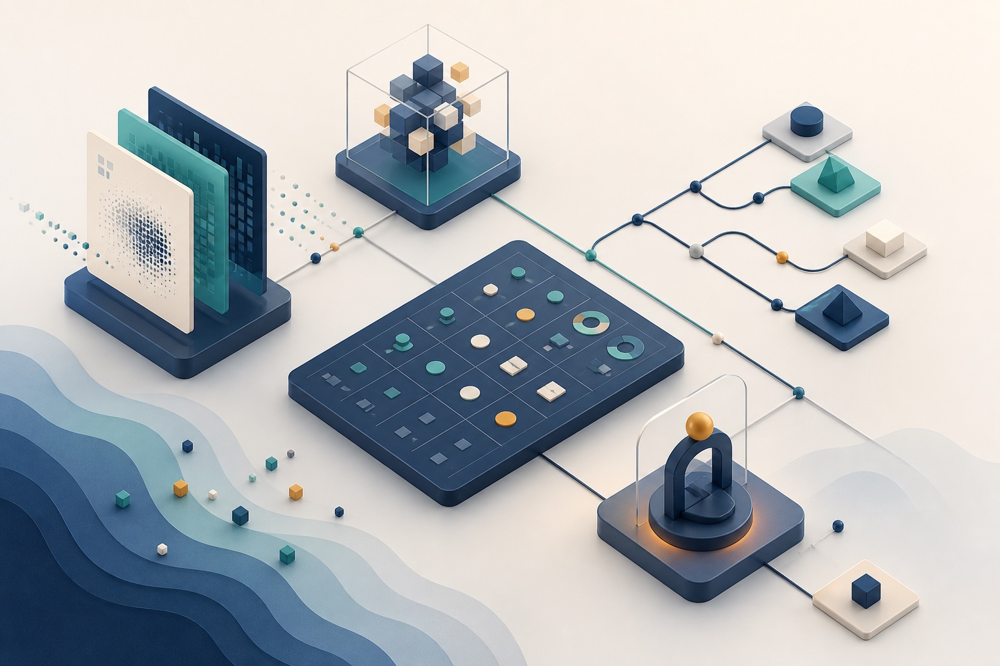
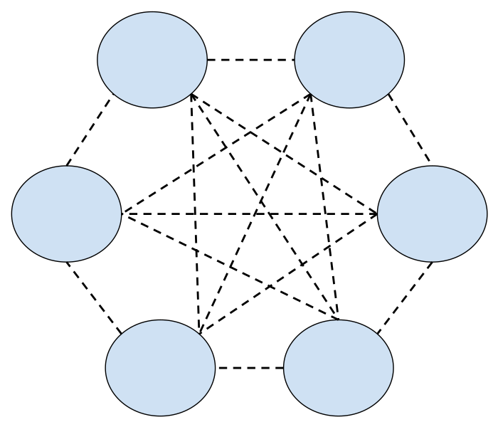

Technology & security leaders
See how I connect model choices with security controls, operational risk, explainability, compliance, and human accountability.
AIML-500 · Professional Portfolio
I’m Muhammad Abdulfatah, a cybersecurity and cloud professional advancing into AI and machine learning. I connect technical innovation with the security, governance, and human judgment needed to implement it responsibly.
01 · Professional bio
I am a cybersecurity and IT professional with experience across systems architecture, network security, cloud infrastructure, telecommunications engineering, regulatory compliance, and enterprise technology. Graduate study in AI and machine learning is extending that foundation into model evaluation, responsible data practice, technical communication, and human-centered implementation.
I hold CompTIA Security+ and CySA+, Cisco CCNA, Microsoft AZ-500 and AZ-104, AWS Solutions Architect Associate, and ISO 27001 Lead Implementer credentials. I am also pursuing advanced security credentials while continuing to build applied AI/ML capability.
My work is shaped by change leadership: listening to stakeholders, translating complex ideas, identifying risk early, and turning strategy into practical steps that teams can adopt and sustain.
02 · Target audience
This portfolio is a resource for decision-makers who need credible evidence of both AI/ML learning and the professional judgment required to apply it responsibly.
See how I connect model choices with security controls, operational risk, explainability, compliance, and human accountability.
Review practical evidence of data-quality reasoning, validation design, fairness evaluation, technical research, and responsible deployment.
Evaluate my ability to learn quickly, communicate across disciplines, structure complex work, and translate emerging technology into organizational value.
03 · Personal value proposition
I help organizations navigate the intersection of artificial intelligence, cybersecurity, and regulatory responsibility. My value is the ability to pair security and cloud experience with growing AI/ML expertise—so innovation is evaluated not only for what it can do, but for how safely, clearly, and responsibly it can be implemented.
04 · Evidence of growth
Each artifact includes its objective, process, tools and technologies, audience, value proposition, tangible work, and references where applicable.

A connected body of work
The six original course artifacts move from human cognition and ethical foundations into model selection, hands-on tool exploration, change leadership, solution design, and professional positioning. Together, they preserve the evidence of my AIML-500 learning journey.
A foundational reflection on the difference between mechanical reasoning and human conscience, intention, meaning, dignity, and moral responsibility.
Read the reflective exploration
A real-world comparison of Bayesian spam detection and deep-learning retinal-image screening, focused on data fit, explainability, infrastructure, and risk.
Open the case analysisDocumented exploration of generative-AI platforms using common prompts, screenshots, comparative quality criteria, and the complete design-thinking cycle.
Explore the lab documentationA structured evaluation of vision casting, stakeholder engagement, risk management, organizational learning, and my continuing leadership-development priorities.
Review the leadership assessmentAn end-to-end plan that moves from user needs and problem definition through architecture choices, guardrails, testing, monitoring, and change adoption.
Explore the implementation planA structured method for identifying target audiences, translating skills into benefits, articulating professional value, and connecting every artifact to outcomes that matter.
View the value frameworkAdditional work
These projects provide further evidence of research, technical communication, and responsible-data judgment. They supplement—but do not replace—the six original course artifacts above.
An evidence-based visual timeline connecting foundational ideas, landmark systems, deep learning, transformers, and broadly accessible generative AI.
Explore the timeline
A plain-language learning brief explaining how neural networks learn through examples, prediction, feedback, adjustment, and repetition.
View the learning briefThree scenarios examining missing data, class imbalance, temporal change, bias, interpretability, and defensible ML controls.
Review the scenarios05 · Course learning outcomes
The evidence is organized around what I can now analyze, explain, design, and evaluate—not simply around assignments completed.
Distinguish machine capability from human meaning, dignity, moral judgment, and responsibility.
Compare ML and deep learning by data, explainability, infrastructure, error consequences, and operating context.
Test generative-AI systems systematically and turn observations into reusable learning resources.
Evaluate leadership strengths, engage stakeholders, recognize risk, and plan continuing development.
Move from user needs to architecture decisions, prototypes, guardrails, testing, and monitoring.
Translate capabilities and evidence into outcomes relevant to technical, leadership, and hiring audiences.
06 · Let’s connect
I’m interested in opportunities where cybersecurity, responsible AI, cloud technology, and change leadership come together.